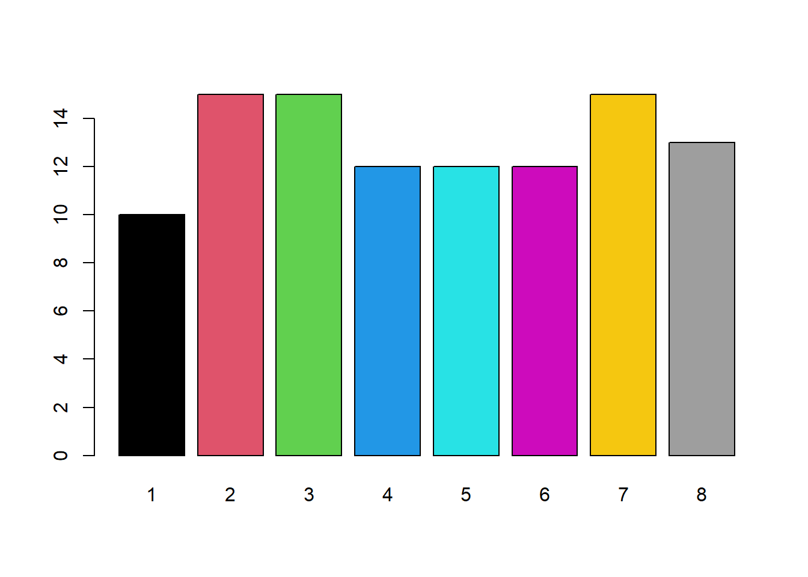
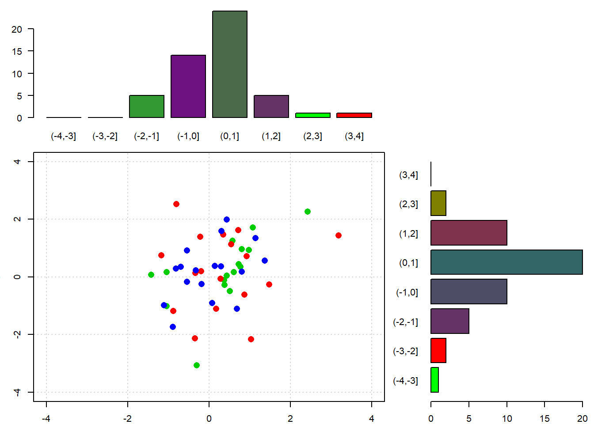
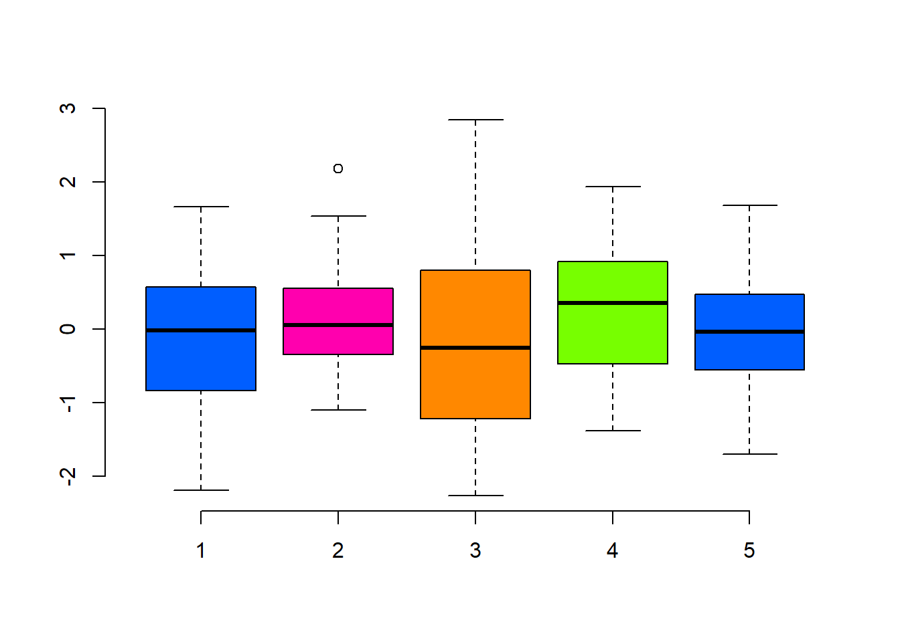
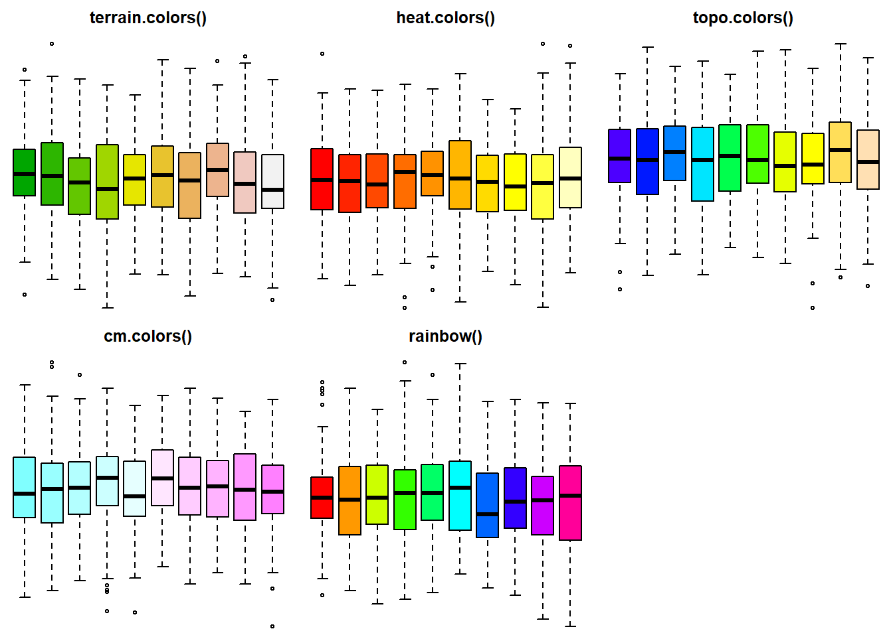
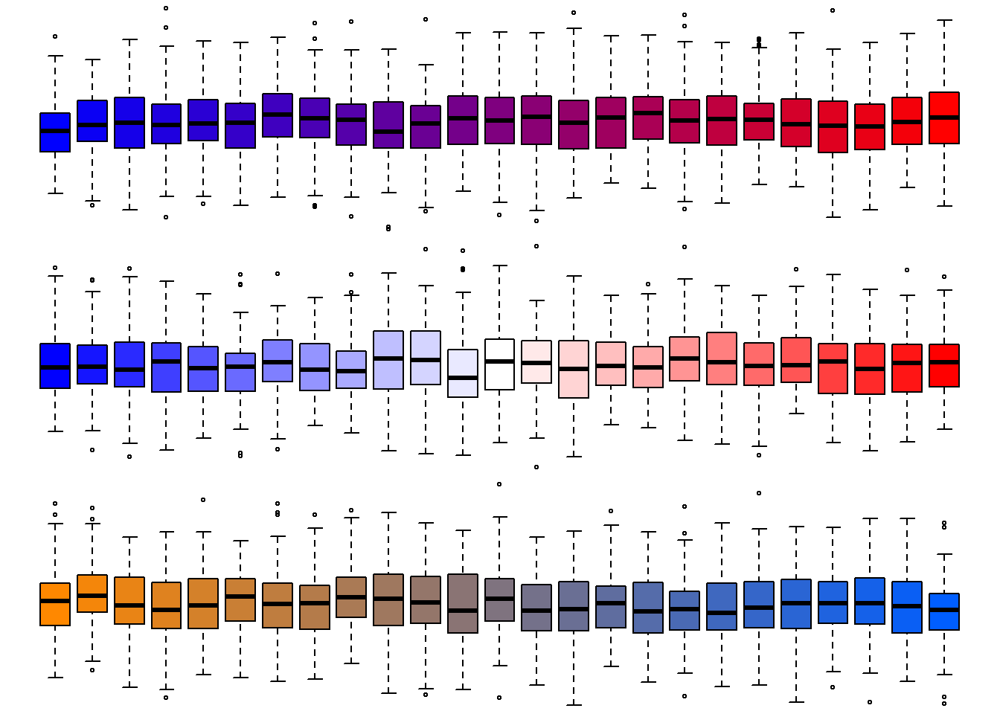
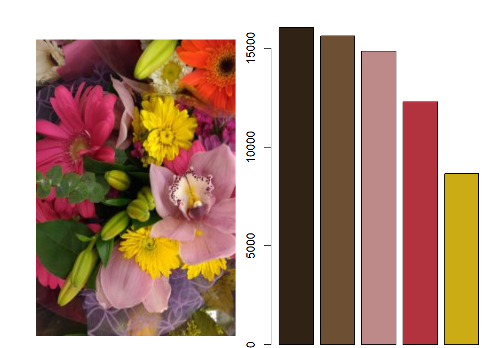
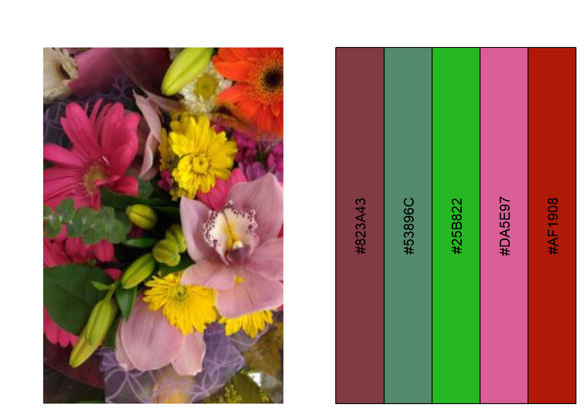
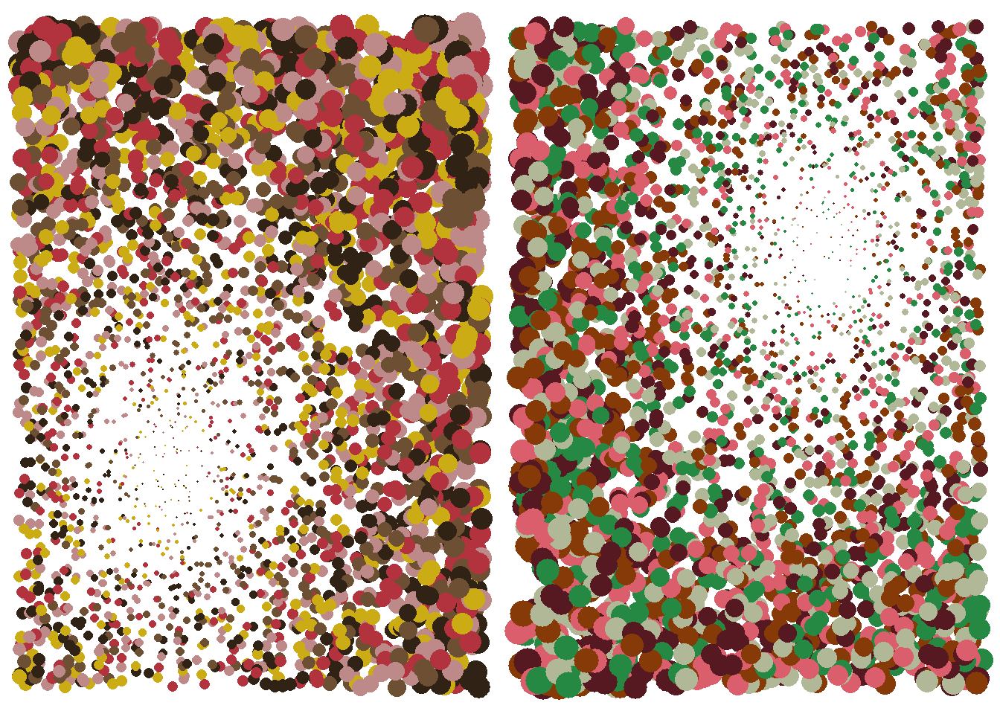

12 Gestión del color
Hemos visto diferentes formas de usar los colores: con su nombre (por ejemplo, "salmón"), con un número del 1 al 8, con la función rgb() (para “rojo / red”, “verde / green”, “azul / blue”), y con la función colors(). Hay otros pero estos son los principales.
El uso de los números del 1 al 8 corresponde a negro, rojo, verde, azul, cian, magenta, amarillo y gris. Este uso es útil para visualizar rápidamente nuestros resultados, pero proporciona gráficos generales visualmente promedio. Es preferable evitar estos colores para comunicar nuestros gráficos o para construir figuras en revistas científicas.
barplot(sample(10:15, 8, replace = TRUE), col = 1:8, names.arg = 1:8)
12.1 colors()
Para elegir colores más agradables y resaltar nuestros resultados, una opción es elegir de la lista de colores pregrabados en R. Podemos acceder a la lista de colores con la función colors()
head(colors(), n = 20)## [1] "white" "aliceblue" "antiquewhite" "antiquewhite1"
## [5] "antiquewhite2" "antiquewhite3" "antiquewhite4" "aquamarine"
## [9] "aquamarine1" "aquamarine2" "aquamarine3" "aquamarine4"
## [13] "azure" "azure1" "azure2" "azure3"
## [17] "azure4" "beige" "bisque" "bisque1"Podemos usar estos colores con sus nombres (por ejemplo, "white", "azure3"), o con su número (por ejemplo, “white” = colors()[1], “azure3” = colors()[16]).
# adapted from http://www.r-graph-gallery.com/42-colors-names/
op <- par(no.readonly = TRUE)
par(mar = c(0, 0, 0, 0))
plot(0, type = "n", xlim = c(0, 1), ylim = c(0, 1),
axes = FALSE, xlab = "", ylab = "")
numRow <- 26
numCol <- 26
rect(
xleft = rep((0:(numCol - 1)/numCol), numRow),
ybottom = sort(rep((0:(numRow - 1)/numRow),numCol), decreasing = TRUE),
xright = rep((1:numCol/numCol), numRow),
ytop = sort(rep((1:numRow/numRow), numCol), decreasing = TRUE),
border = grey(0.5),
col = colors()[seq(1, numRow*numCol)])
myLabels <- c(as.character(1:657), rep("", numRow*numCol - 657))
text(
x = rep((0:(numCol - 1)/numCol), numRow) + 0.02,
y = sort(rep((0:(numRow - 1)/numRow), numCol), decreasing = TRUE) + 0.02,
labels = myLabels,
cex = 0.6)
par(op)12.2 rgb()
Otra opción es crear nuestros propios colores con la función rgb(), que toma la cantidad de rojo, verde y azul como argumentos. De forma predeterminada, estos valores se encuentran entre 0 y 1. Esta configuración predeterminada se puede cambiar con el argumento maxColorValue para, por ejemplo, tener valores entre 0 y 255 (maxColorValue = 255, estándar para la representación del color RGB) .
Vamos a reanudar nuestra función para representar la distribución de puntos en un diagrama de dispersión por medio de barplot con este tiempo tres colores de puntos (rojo, verde, azul) y un barplot cuyo color corresponderá a la cantidad de cada color con la función rgb().
graphBarplotCol <- function(n){
myX <- rnorm(n)
myY <- rnorm(n)
myCol <- c(2, 3, 4, sample(2:4, size = (n - 3), replace = TRUE))
myYCut <- cut(myY, breaks = -4:4)
myXCut <- cut(myX, breaks = -4:4)
myYCutCol <- table(myCol, myYCut)
myXCutCol <- table(myCol, myXCut)
rColX <- myXCutCol[1,] / (myXCutCol[1,] + myXCutCol[2,] +
myXCutCol[3,])
gColX <- myXCutCol[2,] / (myXCutCol[1,] + myXCutCol[2,] +
myXCutCol[3,])
bColX <- myXCutCol[3,] / (myXCutCol[1,] + myXCutCol[2,] +
myXCutCol[3,])
rColX[is.na(rColX)] <- 0
gColX[is.na(gColX)] <- 0
bColX[is.na(bColX)] <- 0
rColY <- myYCutCol[1,] / (myYCutCol[1,] + myYCutCol[2,] +
myYCutCol[3,])
gColY <- myYCutCol[2,] / (myYCutCol[1,] + myYCutCol[2,] +
myYCutCol[3,])
bColY <- myYCutCol[3,] / (myYCutCol[1,] + myYCutCol[2,] +
myYCutCol[3,])
rColY[is.na(rColY)] <- 0
gColY[is.na(gColY)] <- 0
bColY[is.na(bColY)] <- 0
op <- par(no.readonly = TRUE)
par(mar = c(2, 3, 1, 1))
layout(matrix(c(1, 1, 0,
2, 2, 3,
2, 2, 3), ncol = 3, byrow = TRUE))
barplot(table(myXCut), las = 1, col = rgb(rColX, gColX, bColX))
plot(x = myX, y = myY, col = myCol, pch = 16,
xlim = c(-4, 4), ylim = c(-4, 4), cex = 1.5,
panel.first = grid())
barplot(table(myYCut), las = 1, horiz = TRUE,
col = rgb(rColY, gColY, bColY))
par(op)
}
graphBarplotCol(n = 50)
Con la función rgb() podemos representar 256^3 colores, o 167 777 216 colores diferentes. Nuestro objetivo, sin embargo, es hacer gráficos que sean divertidos de leer y que hagan un buen uso de nuestros resultados científicos. Por lo tanto, debemos elegir los colores adecuados para nuestro propósito. Por eso utilizaremos paletas de colores.
12.3 Paletas de colores
Las paletas son esquemas de color representados como un vector con colores en formato hexadecimal (valor devuelto por la función rgb()).
myPal <- c(
rgb(0, 94, 255, maxColorValue = 255),
rgb(255, 0, 174, maxColorValue = 255),
rgb(255, 136, 0, maxColorValue = 255),
rgb(119, 255, 0, maxColorValue = 255))
print(myPal)## [1] "#005EFF" "#FF00AE" "#FF8800" "#77FF00"boxplot(matrix(rnorm(100), ncol = 5), col = myPal, axes = FALSE)
axis(1)
axis(2)
Hay paletas de colores incluidos en R: terrain.colors(), heat.colors(), topo.colors(),
cm.colors(), rainbow().
op <- par(no.readonly = TRUE)
par(mfrow = c(2, 3), mar = c(0, 0, 2, 0))
boxplot(matrix(rnorm(1000), ncol = 10), main = "terrain.colors()",
col = terrain.colors(10), axes = FALSE)
boxplot(matrix(rnorm(1000), ncol = 10), main = "heat.colors()",
col = heat.colors(10), axes = FALSE)
boxplot(matrix(rnorm(1000), ncol = 10), main = "topo.colors()",
col = topo.colors(10), axes = FALSE)
boxplot(matrix(rnorm(1000), ncol = 10), main = "cm.colors()",
col = cm.colors(10), axes = FALSE)
boxplot(matrix(rnorm(1000), ncol = 10), main = "rainbow()",
col = rainbow(10), axes = FALSE)
par(op)
También hay una función colorRampPalette() que nos permite crear un degradado de color.
op <- par(no.readonly = TRUE)
par(mfrow = c(3, 1), mar = c(0, 0, 0, 0))
boxplot(matrix(rnorm(2500), ncol = 25),
col = colorRampPalette(c('blue', 'red'))(25), axes = FALSE)
boxplot(matrix(rnorm(2500), ncol = 25),
col = colorRampPalette(c('blue', 'white', 'red'))(25), axes = FALSE)
boxplot(matrix(rnorm(2500), ncol = 25),
col = colorRampPalette(c(rgb(255, 136, 0, maxColorValue = 255),
rgb(0, 94, 255, maxColorValue = 255)))(25),
axes = FALSE)
par(op)También podemos crear nuestras propias paletas utilizando sitios web de selección de colores como http://paletton.com/ o https://coolors.co/ (hay muchos más), y luego utilizarlos en R copiando en un vector los valores hexadecimales o rgb.
R es un lenguaje de programación muy poderoso. Podemos imaginar muchas formas de crear paletas automáticamente de acuerdo con varios criterios. Por ejemplo, podemos importar una imagen cuyos tonos nos parezcan relevantes, luego extraer la información de cada uno de los puntos y luego seleccionar los colores dominantes a través de una agrupación tipo kmeans. Eso es lo que hace la siguiente función.
Primero, cargaremos los paquetes raster,rgdal y jpeg que se utilizarán para manipular nuestra imagen en R.
pkgCheck <- function(x){
if (!require(x, character.only = TRUE)){
install.packages(x, dependencies = TRUE)
if(!require(x, character.only = TRUE)) {
stop()
}
}
}
pkgCheck("raster")## Le chargement a nécessité le package : raster## Le chargement a nécessité le package : sppkgCheck("rgdal")## Le chargement a nécessité le package : rgdal## rgdal: version: 1.5-23, (SVN revision 1121)
## Geospatial Data Abstraction Library extensions to R successfully loaded
## Loaded GDAL runtime: GDAL 3.2.1, released 2020/12/29
## Path to GDAL shared files: C:/Users/nous/Documents/R/win-library/4.1/rgdal/gdal
## GDAL binary built with GEOS: TRUE
## Loaded PROJ runtime: Rel. 7.2.1, January 1st, 2021, [PJ_VERSION: 721]
## Path to PROJ shared files: C:/Users/nous/Documents/R/win-library/4.1/rgdal/proj
## PROJ CDN enabled: FALSE
## Linking to sp version:1.4-5
## To mute warnings of possible GDAL/OSR exportToProj4() degradation,
## use options("rgdal_show_exportToProj4_warnings"="none") before loading rgdal.
## Overwritten PROJ_LIB was C:/Users/nous/Documents/R/win-library/4.1/rgdal/projpkgCheck("jpeg")## Le chargement a nécessité le package : jpegLuego usaremos la función kmeans() para realizar grupos de colores usando los valores RGB de cada punto en nuestra imagen. Aquí tenemos dos métodos posibles, el primero usa la función kmeans() para los tres valores RGB, y el segundo usa la función kmeans() para cada valor RGB individualmente (esta segunda función proporciona una paleta que puede ser bastante alejado de los colores de la imagen original).
createPal <- function(photo, met = 1, graph = TRUE, k = 9){
if(met == 1){
colR <- getValues(raster(photo, band = 1))
colG <- getValues(raster(photo, band = 2))
colB <- getValues(raster(photo, band = 3))
kMeans <- kmeans(data.frame(colR, colG, colB), centers = k)
kCol <- rgb(kMeans$centers, maxColorValue = 255)[order(table(
kMeans$cluster), decreasing = TRUE)]
if(graph == TRUE){
op <- par(no.readonly = TRUE)
par(mfrow = c (1, 2), mar = c(0, 2, 2, 0))
myJpg <- readJPEG("./myFiles/photoKmeans.jpg", native = TRUE)
plot(0:1, 0:1, type = "n", ann = FALSE, axes = FALSE)
rasterImage(myJpg, 0, 0, 1, 1)
barplot(table(kMeans$cluster)[order(table(kMeans$cluster),
decreasing = TRUE)], col = kCol, names.arg = NA)
par(op)
}
return(kCol)
} else {
if(met == 2){
kColR <- kmeans(x = getValues(raster(photo, band = 1)),
centers = k)
kColG <- kmeans(x = getValues(raster(photo, band = 2)),
centers = k)
kColB <- kmeans(x = getValues(raster(photo, band = 3)),
centers = k)
kCol <- (rgb(kColR$centers, kColG$centers, kColB$centers,
maxColorValue = 255))
if(graph == TRUE){
op <- par(no.readonly = TRUE)
par(mfrow = c (1, 2), mar = c(0, 2, 2, 0))
myJpg <- readJPEG("./myFiles/photoKmeans.jpg", native = TRUE)
plot(0:1, 0:1, type = "n", ann = FALSE, axes = FALSE)
rasterImage(myJpg, 0, 0, 1, 1)
plot(x = 1:k, y = rep(1, k), ylim = c(0, 1),
xlim = c(0, k), axes = FALSE, xlab = "",
ylab = "", type = "n")
for(i in 1:k){
polygon(x = c(i-1, i, i, i-1), y = c(0, 0, 1, 1),
col = kCol[i])
text(x = i - 0.5, y = 0.5,
labels = as.character(kCol[i]), srt = 90)
}
par(op)
}
return(kCol)
} else {
print(paste0("No method ", met, "."))
return(rgb(0, 0, 0))
}
}
}
myPalMet1 <- createPal(photo = "./myFiles/photoKmeans.jpg",
met = 1, graph = TRUE, k = 5)
myPalMet2 <- createPal(photo = "./myFiles/photoKmeans.jpg",
met = 2, graph = TRUE, k = 5)
La función nos devuelve los colores de la paleta con un gráfico de barras que representa el número de puntos de la imagen en cada uno de los grupos de colores. Ahora podemos usar nuestra nueva paleta para hacer nuestros gráficos.
makeImpact <- function(myPal, numP = 300, impact = 0.33, multCex = 3){
myX <- sample(0:1000, size = numP, replace = TRUE)/1000
myY <- sample(0:1000, size = numP, replace = TRUE)/1000
distImpact <- sqrt((myX - impact)^2 + (myY - impact)^2)
dfXY <- data.frame(myX, myY, distImpact)
plot(x = dfXY$myX, y = dfXY$myY, axes = FALSE,
xlab = "", ylab = "", cex = dfXY$distImpact*multCex,
col = myPal, pch = 16)
}
op <- par(no.readonly = TRUE)
par(mfrow = c (1, 2), mar = c(0, 0, 0, 0))
makeImpact(myPal = myPalMet1, numP = 3000, impact = 0.33)
makeImpact(myPal = myPalMet2, numP = 3000, impact = 0.66)
par(op)12.4 Conclusión
Felicitaciones ! Este es el final de este capítulo sobre la gestión del color. Ahora sabemos cómo usar colores y paletas, y cómo guiar la selección de colores para resaltar nuestros resultados. En el siguiente capítulo veremos algunos ejemplos de paquetes de gráficos y las últimas tendencias, como los gráficos dinámicos.